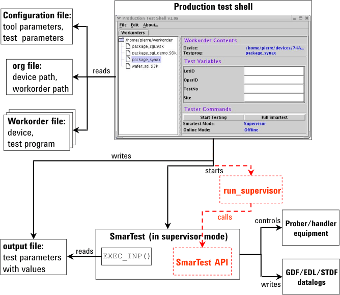

Implementation details for supervisor mode
If the test shell is configured to run SmarTest in supervisor mode (instead of operator mode), it will start not only SmarTest, but also another program (run_supervisor) that will do the actual work of making the calls to the SmarTest API to test the device. Thus, the test shell issues two calls in this case, namely:
/opt/hp93000/soc/prod_env/bin/HPSmarTest -S &
run_supervisor <device_path> <device_name> <test_program>
The run_supervisor program (C language) calls the most basic SmarTest API functions to perform tasks (for example, change the device, load the test program, and execute the test). Its three input parameters (device path, device name and test program name) are extracted by the test shell from the workorder file that was specified by the user in the test shell GUI.
Theoretically, it would be possible to call the SmarTest API functions directly from the test shell. But it is better to keep the Test Shell application separate from the SmarTest application, just in case SmarTest locks up during testing, which would cause the test shell to lock up, too. The test shell locking up could cause a big problem if a customer tries to integrate it into another application.
Once the lot has been tested, and the test program ends, SmarTest will stay alive in supervisor mode.
The following figure illustrates the components of the custom production test shell for running SmarTest running in supervisor mode.

The main differences between calling SmarTest in supervisor mode and calling it in operator mode are highlighted in the figure by a different line style and color.
The run_supervisor program
run_supervisor is a template. As already indicated, it only calls the most basic functions, and in typical order, namely:
- the HpInit() function (TPI), which is called to attach to a currently running SmarTest session,
- the ChangeDevice() function (TPI), which is called to change to a new device,
- the DataManager() function (TPI), which is called to load a test program,
- the ExecTestProgram() function (CPI), which is called to start test execution,
- the HpTerm() function (TPI), which is called to de-attach from the SmarTest session.
The code of the program appears as follows:
#include <stdio.h>
/* List the custom header files. */ #include "tpi_c.h" #include "ci_types.h" #include "libcicpi.h"
int main(int argc, char* argv[]) { char szSysCmd[256], szDevPath[256]; long lReturnValue, lDeviceState; int iExitStatus;
#ifndef OS_LINUX _main(); #endif
HpInit(); /* attach to SmarTest process */
/* Program Arguments: argv[0]=="run_supervisor" argv[1]=="device path" argv[2]=="device name" argv[3]=="program name" */
ChangeDevice(argv[1],argv[2],FALSE,&lDeviceState); /* Change device */
if (lDeviceState == 1) { /* Check for an error. */ { sprintf(szDevPath,"%s/%s",argv[1],argv[2]); /* init path */
/* Load test program */ DataManager(dm_testprog,dm_load,szDevPath,argv[3],0,&lDeviceState);
|
if (lDeviceState >= -1) { /* Check for an error. */ lReturnValue = ExecTestProgram(); /* Execute test program. */ if (lReturnValue == 0) { /* Set exit status */ iExitStatus = CI_CALL_PASS;
} else { iExitStatus = CI_CALL_ERROR; }
} else { iExitStatus = CI_CALL_ERROR; /* Error, cannot run data mngr */ }
} else { iExitStatus = CI_CALL_ERROR; /* Error, cannot change device. */ } exit(iExitStatus); HpTerm(); } |
Compiling the program for HP-UX and Linux
You can compile this program for both HP-UX and Linux as follows:
- Create a makefile using the install_cs
script:
/opt/hp93000/soc/prod_env/lbin/install_cs -t PROGRAM
- Remove the default pg_templ.c:
$ rm pg_templ.c
Update the makefile with the new C file (run_supervisor.c) and call the compiler:
$ make depend all
You can try the program out without any custom production shell by running it from the command line as follows:
./run_supervisor <device_path> <device_name> <test_program_name>
The following is an example:
./run_supervisor /devices 74ACT299 package_74ACT299
Hiding specific SmarTest windows in supervisor mode
When the custom production shell calls SmarTest in supervisor mode, the SmarTest Operation Control window should probably be hidden from the operator (since you will probably implement this functionality in your own shell). The only SmarTest window that should be visible is the Report Window.
The following example program show_win shows how this can be done. It allows the shell to iconify, hide or show a window by specifying the option and the window name. The format is as follows:
show_win -[hide|iconify|show] "<window_name>"
The options are self-explanatory.
For example, to hide the SmarTest Operation Control window, call
$ show_win -hide "Operation Control"
The code of the program is as follows:
#include <X11/Xlib.h>
#include <X11/Xatom.h>
#include <stdio.h>
#include <string.h>
#define MAX_WIN_AT_LEVEL 25000
findname(dpy,top_win,search_win_name,win_found,win_found_max,nfound)
Display *dpy;
Window top_win;
char search_win_name[];
Window win_found[];
int win_found_max;
int *nfound;
{
Window buf1[MAX_WIN_AT_LEVEL];
Window buf2[MAX_WIN_AT_LEVEL];
Window *parents;
Window *children;
Window *tmp;
int nparents;
int nchildren;
int parent;
int child;
Window q_root_ret;
Window q_parent_ret;
Window *q_children_ret;
unsigned int q_nchildren_ret;
int q_child;
int status;
Atom actual_type;
int actual_format;
unsigned long nitems,leftover;
unsigned char *data;
parents = buf1;
children = buf2;
parents[0] = top_win;
nparents = 1;
*nfound = 0;
while(nparents>0){
/*check name*/
for(parent=0;parent<nparents;parent++){
status=XGetWindowProperty(
dpy,parents[parent],XA_WM_NAME, 0L, 80L , False,
XA_STRING, &actual_type, &actual_format, &nitems, &leftover, &data
);
if (status == Success){
/* printf("name: <%s>\n", (char *) data); */
if ((char *) data != NULL) {
if (strcmp((char *) data,search_win_name) == 0 ){
XFree(data);
win_found[*nfound]=parents[parent];
(*nfound)++;
if (*nfound >= win_found_max){
goto exit_true;
}
}
XFree(data);
}
}else{
printf("XGetWindowProperty failed. aborting.\n");
exit(-1);
}
}
/*build children list*/
nchildren = 0;
for(parent=0;parent<nparents;parent++){
XQueryTree(
dpy,parents[parent],
&q_root_ret,&q_parent_ret,&q_children_ret,&q_nchildren_ret
);
if ( (nchildren + q_nchildren_ret) > MAX_WIN_AT_LEVEL){
printf("MAX_WIN_AT_LEVEL (%d) exceeded. aborting.\n",MAX_WIN_AT_LEVEL);
exit(-1);
}
for(q_child=0;q_child<q_nchildren_ret;q_child++){
children[nchildren] = q_children_ret[q_child];
nchildren++;
}
XFree(q_children_ret);
}
/*swap children to parents*/
tmp = parents;
parents = children;
nparents = nchildren;
children = tmp;
nchildren = 0;
}
if (*nfound > 0) goto exit_true;
exit_false:
return False;
exit_true:
return True;
}
void show_options()
{
fprintf(stderr,"wrong option!\n");
fprintf(stderr,"Valid options are:\n");
fprintf(stderr," -show <window name>\n");
fprintf(stderr," -hide <window name>\n");
fprintf(stderr," -iconify <window name>\n");
}
int main (argc, argv)
int argc;
char * argv[];
{
Display *dpy;
Window win;
int screen;
Window *found_win;
char *search_win_name;
int status;
int nfound;
int nfound_max;
int i;
char option[64];
if(argc<=1) {
show_options();
exit(-1);
}
if ((dpy = XOpenDisplay(0)) == 0){
fprintf (stderr, "cannot open X display server\n");
exit (1);
}
screen = DefaultScreen(dpy);
strcpy(option,argv[1]);
search_win_name = argv[2];
/* the parameter 1 is the maximum number of windows found */
found_win = (Window *) calloc(1, sizeof(Window));
if(findname(dpy,XDefaultRootWindow(dpy),search_win_name,found_win,1,&nfound)!= False)
{
for(i=0;i<nfound;i++){
if(strcmp(option,"-iconify")==0)
status = XIconifyWindow(dpy, found_win[i], screen);
else if(strcmp(option,"-hide")==0)
status = XWithdrawWindow(dpy,found_win[i],screen);
else if(strcmp(option,"-show")==0)
status = XMapWindow(dpy,found_win[i]);
else {
show_options();
}
}
}
XCloseDisplay(dpy);
return 0;
}Compiling the program for HP-UX and Linux
You can compile this program for both HP-UX and Linux. Under HP-UX, the compiler call is
cc -Aa -D_HPUX_SOURCE -o show_win -I/usr/X11R6/include
-L/usr/X11R6/lib -lX11 show_win.c
Under Linux, issue:
gcc -o show_win -I/usr/X11R6/include -L/usr/X11R6/lib
-l X11 show_win.c